YarnAllocator: turning executor targets into container requests
Component index · Parent: ApplicationMaster
YarnAllocator lives in the ApplicationMaster JVM, in both deploy modes. It reconciles the driver's desired executor counts with outstanding YARN requests and executor launches. The ResourceManager (RM) decides where to grant capacity, the selected NodeManager (NM) starts the process, and the executor backend registers itself with the driver. The allocator never assigns Spark tasks or certifies that an executor is ready for them.
Flow at a glance
- Spark driver: Sets a target of five executors for one resource profile.
- YarnAllocator: Counts two running, one starting and one pending, then requests one more.
- Launch worker: Sends a start request to the NodeManager named in a matching grant.
Key distinction: The allocator can count an executor as running before that executor registers with the driver.
Show the animated flow

Interfaces and state
| Counterparty |
Inputs, outputs, and local state |
| AM and Spark driver |
The AM supplies an already-registered AMRMClient, attempt ID, driver URL/reference, credentials context, and executor LocalResource manifest. initDefaultProfile seeds the initial target. RequestExecutors later carries absolute totals per ResourceProfile, locality hints and excluded nodes. requestTotalExecutorsWithPreferredLocalities updates that state; KillExecutors is a separate request naming particular executors. Constructor and state · initial target · target updates |
| ResourceManager |
The allocator maps each Spark resource profile to a YARN Resource (total memory, vcores, applicable custom resources) and uses the profile ID as YARN request priority to distinguish shapes. Hadoop's AMRMClient tracks pending ContainerRequests. allocate exchanges asks/releases for grants, updated-node information, and completed ContainerStatus records. It also heartbeats when there is nothing new to ask for. Priority mapping · resource shape · poll |
| NodeManager and driver |
A launch worker uses ExecutorRunnable to call NMClient.startContainer(grant, launchContext) on the assigned NM. The allocator tracks starting counts, running executor IDs per profile, host/container/executor mappings, and containers already released. Its running set is not the driver's executor registry: the AM updates its own set after the NM start call returns, provided the container has not already completed. Launch and bookkeeping · NM call |
Trace one allocation cycle
- Suppose the driver wants 5 executors of one profile. The AM knows of 2 running, 1 starting and 1 pending.
updateResourceRequests() computes missing = target - pending - running - starting, so it needs 1 more, not 3 or 5. It can replace stale locality requests, form node/rack-preferred asks, and use any-host asks for the remainder. addContainerRequest updates AMRMClient bookkeeping; it is not a container grant. Demand arithmetic · placement and cancellations
- The AM's reporter calls
allocateResources(): update the asks, then call amClient.allocate(0.1f). That fixed argument is not the fraction of tasks finished. The response may contain no grant, several grants, and/or completions. handleAllocatedContainers tries host, then rack, then any host, using the grant's priority and the requested capability. It removes one matching request. A late grant with no matching demand can be released unused. Heartbeat/result · grant matching
- If a grant matches and the running count is below target,
runAllocatedContainers assigns a Spark executor ID, marks the launch in flight and submits work to the ContainerLauncher pool. The NM gets a command with --driver-url, --executor-id, --cores, --app-id and --resourceProfileId. It localizes the files and starts YarnCoarseGrainedExecutorBackend. A Spark executor ID is not a YARN container ID. The allocator seeds its counter with RetrieveLastAllocatedExecutorId from the driver; a replacement client-mode AM must not reuse IDs the surviving driver already knows. ID initialization · launch worker · command
- The executor independently fetches driver configuration, sends
RegisterExecutor to the driver's CoarseGrainedScheduler, then signals LaunchedExecutor when ready. In cluster mode that driver endpoint is in the AM JVM; in client mode it is on the submit host. Neither uses YarnAllocator as a proxy. A second heartbeat must not re-request a container just because the JVM has not registered yet. Executor bootstrap · registration · ready handling
Sequence diagram · Open full sizeText equivalent
sequenceDiagram
participant D as Spark driver
participant A as YarnAllocator in AM
participant R as ResourceManager
participant N as Granted NodeManager
participant E as Executor JVM
D->>A: Desired totals via YarnAM
A->>R: allocate heartbeat with pending asks
R-->>A: Container grant on N
A->>N: startContainer via ExecutorRunnable
N->>E: Localize resources and start JVM
E->>D: RetrieveSparkAppConfig, then RegisterExecutor
E->>D: LaunchedExecutorScale-down, failure, and shutdown
- Reduced target: a negative delta cancels pending asks, up to the number pending. Lowering the target does not select existing executors to kill.
killExecutor(id) instead resolves a known executor to its container, records the intentional release and asks the RM to release it. This distinction prevents a normal downscale from being diagnosed as an unexpected process loss. Cancel pending asks · explicit release
- Launch failure versus executor loss: on a nonfatal NM launch exception the worker clears its starting bookkeeping and requests release of the grant. If a launched container later completes,
processCompletedContainers removes the mappings and computes an ExecutorExited reason. Preemption is not attributed to the application; a YARN physical-memory-limit kill normally is. Pending GetExecutorLossReason calls receive the reason, or it is saved for a later query. An unexpected completion for a mapped executor also sends RemoveExecutor to the driver. The next poll can ask for a replacement if the target still requires one. Launch failure · exit classification · loss notifications
- AM shutdown: the reporter stops the allocator in
finally; stop() calls launcherPool.shutdownNow() so queued launches do not start. The AM, not the allocator, owns the attempt's final status. Reporter cleanup · pool shutdown
Where to look: compare the AM's target, pending, running, and executorsStarting for the same profile. Pending without grants points first to RM capacity or placement. A grant and an AM launch log but no executor in the Spark UI calls for checking that container's NM/executor diagnostics and its advertised driver URL, not just increasing the target.